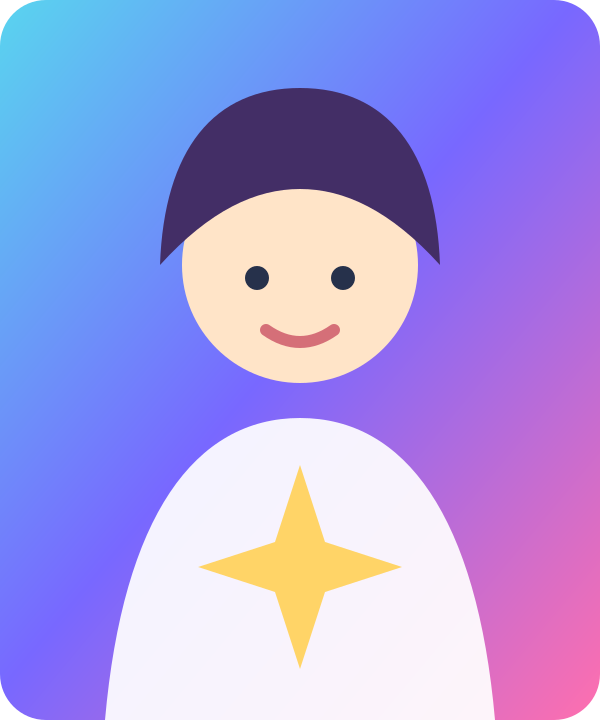
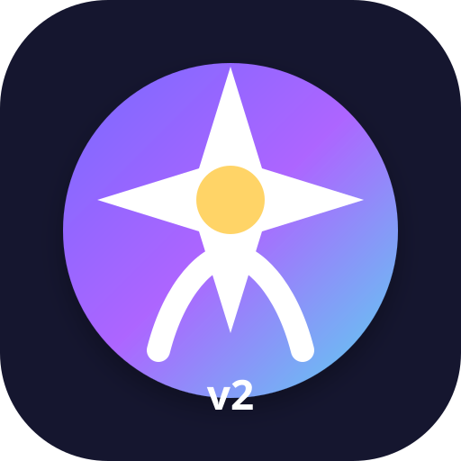

Juega con el mundo
Coloca personajes y objetos como pegatinas, cambia el escenario y crea una ilustración propia.


Todas las personas con el enlace y la contraseña editan la misma historia. Los cambios se guardan solos y aparecen para todo el mundo.
Usad solo nombres o apodos. No escribáis dirección, colegio, teléfono ni otros datos personales.
Modificad personajes, lugares y aventuras. No hay copias distintas: todo el mundo trabaja sobre el mismo canon.
Coloca personajes y objetos como pegatinas, cambia el escenario y crea una ilustración propia.

Prepara libros, imágenes, vídeos y hojas de personajes con todo el canon del mundo.
Cada cambio se envía al mundo común sin tener que pulsar Guardar.
Sus retratos proceden de la ilustración principal. Cada uno puede transformarse en un animal y alcanzar una evolución mágica.
Cualquier cambio se convierte en parte del único mapa compartido.
Inventad misiones, secretos, momentos divertidos y finales que abran nuevas puertas.
Un espacio original de pegatinas, personajes y escenarios coloridos, inspirado en el juego libre infantil sin copiar personajes ni diseños de ninguna marca.
Utiliza el mundo compartido como canon. La aplicación crea borradores, escenas, vídeos animados y fichas; los botones «Usar mi ChatGPT» abren esta cuenta con el encargo preparado para mejorarlo.
Libros, ilustraciones, vídeos, escenas y fichas guardadas por cualquier persona con acceso.
Puedes pegar un texto generado en ChatGPT o subir una imagen, vídeo o documento.
Todo lo escrito aquí guía las futuras historias, ilustraciones y vídeos.
Genera una Biblia Creativa completa con la versión compartida que existe ahora mismo.
Reúne automáticamente toda la información vigente de la aplicación: mundo, reglas, personajes, lugares, aventuras, escena activa, ajustes del estudio y biblioteca compartida.
Conecta opcionalmente la API de OpenAI para que el estudio genere textos, imágenes y vídeos sin salir de la aplicación.
Comprobando…
Una sola versión canónica
Todos los cambios se escriben sobre la misma fila de datos. No se crean copias por participante.
Estado técnico de la aplicación
Cargando…